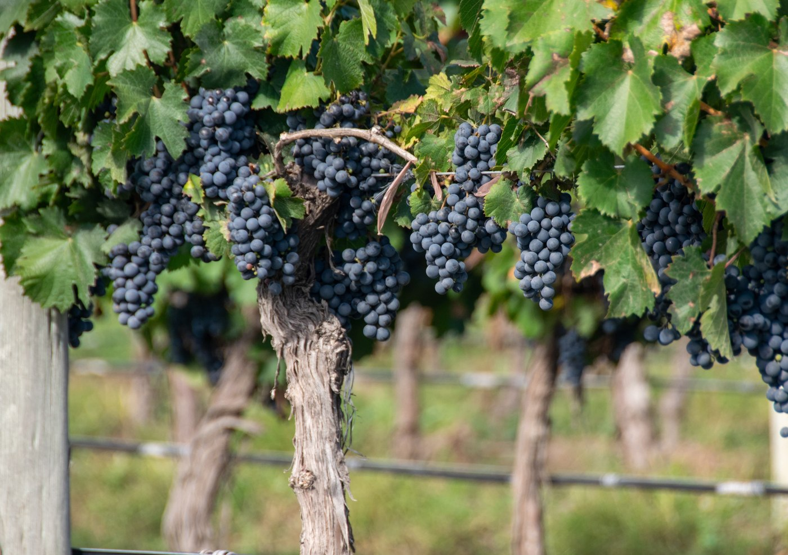
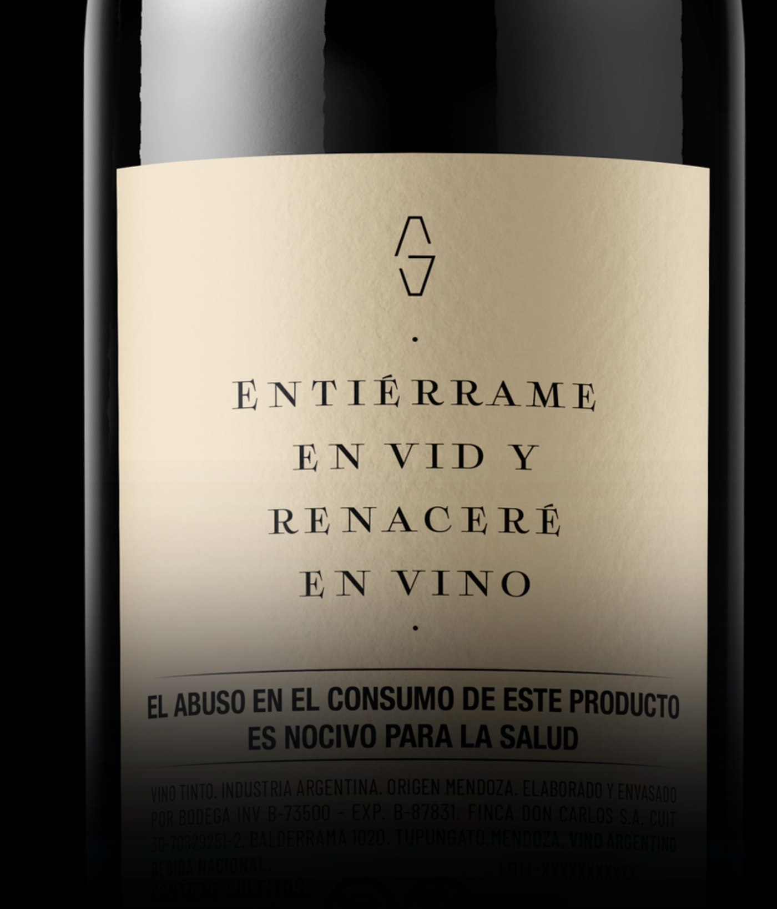

Vinos del Valle de Uco, nacidos al pie de la Cordillera de los Andes.
Wines from the Uco Valley, shaped at the foot of the Andes.
Gerardo's comenzó con una idea: plantar vides y convertir una posibilidad en algo real. A lo largo de tres generaciones, la misma tierra inspiró cada vez una nueva posibilidad. Hoy, esa historia continúa a través de Gerardo's.
Gerardo's began with an idea: to plant vines and turn possibility into something real. Across three generations, the same land inspired a new possibility each time. Today, that story continues through Gerardo's.
Nuestra historiaOur storyPero su historia no termina ahí.
Una botella comienza en la tierra, pero encuentra su destino en la mesa. En la vid, todo se transforma: la tierra, el sol, el agua y el tiempo se convierten en fruto; el fruto, en vino; y el vino, en un momento compartido.
Para Gerardo's, esa transformación también representa cómo una idea puede trascender a quien la imaginó, pasar de una generación a otra y cobrar nueva vida en manos de quien decide continuarla.
De esa mirada nace nuestra inscripción fundacional:
“Entiérrame en vid y renaceré en vino.”
Wine is shaped by time, place and the hands that bring it to life. But its story does not end there. It continues at the table, in the people who gather around it and in the moments they choose to remember.
At Gerardo's, we believe that possibility is something worth pursuing. An idea imagined by one person can be carried forward and reimagined by the generations that follow.
Ubicado al pie de la Cordillera de los Andes, el Valle de Uco reúne condiciones ideales para la viticultura de alta gama.
Located at the foot of the Andes Mountains, the Uco Valley offers ideal conditions for premium viticulture.
900–1,100 m s.n.m.m a.s.l.
Valle de Uco, Tupungato
Espaldero Tradicional
Traditional Trellis
Manual y Selectiva
Hand Harvested Single vineyard
Lotes Limitados
Limited Production
Maceración Fría Prolongada
Extended Cold Maceration
Levaduras Seleccionadas
Selected Yeasts
Fermentación Maloláctica
Full Malolactic Fermentation




Entiérrame en vid
y renaceré en vino.
It begins with— Gerardo's — Gerardo's
the land.
Cinco expresiones del Valle de Uco, cada una elaborada para reflejar el carácter de su variedad.
Five expressions of the Uco Valley, each crafted to reveal the character of its varietal.

Chocolate · Frutos Negros · Moca
Chocolate · Dark Fruit · Mocha
Ver fichaView wine
Frutos Negros · Ciruela · Especias
Dark Fruit · Plum · Spice
Ver fichaView wine
Frutos Rojos · Chocolate · Hierbas
Red Fruits · Chocolate · Herbs
Ver fichaView wine
Frutas Tropicales · Vainilla · Cítricos
Tropical Fruits · Vanilla · Citrus
Ver fichaView wine
Frutos Rojos · Especias · Vainilla
Red Fruits · Spice · Vanilla
Ver fichaView winePrecios y disponibilidad
Pricing and availability
Ir a la tiendaGo to shop